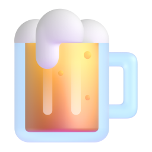

Estabelecimentos
1,54 M
1.543.267 estabelecimentos ativos
Quase toda empresa do setor funciona num endereço só
97,6% só matriz2,4% com filiais
Dados abertos da Receita Federal · CNPJ de ago/2026

e restaurantes do Brasil, em números.
do Brasil, em números.
Quantos negócios de alimentação fora do lar existem, de que tamanho são, onde estão e como as aberturas evoluíram de 2021 a 2025, tudo a partir do cadastro oficial de CNPJ.
de bares, restaurantes, lanchonetes, delivery e padarias
“Um setor de pequenos negócios: quase dois terços são MEI, a mediana de capital é de R$ 5 mil e, depois do piso de 2023, as aberturas voltaram a crescer.”
O porte, a estrutura e a localização das empresas ativas do setor.
Fatia das empresas ativas por porte, com MEI identificado pelo Simples Nacional
Novas empresas do setor ano a ano, de 2021 a 2025, e o capital social que declaram ao abrir.
Empresas de alimentação fora do lar abertas a cada ano, de 2021 a 2025
Variação das aberturas nos maiores estados e os tipos de negócio que dominam o setor.
Variação das aberturas de 2021 para 2025, nos 8 estados com mais aberturas em 2025
Empresas ativas por tipo de negócio; barras proporcionais ao líder
O cadastro nacional da Receita Federal, filtrado para alimentação fora do lar e pronto para análise em Parquet.